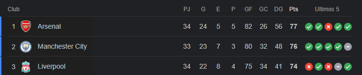

En una jornada llena de emociones en la Premier League, el Arsenal demostró su dominio al vencer contundentemente al Chelsea con un marcador de 5-0. Con esta victoria, los Gunners consolidan su posición en la cima de la tabla con 77 puntos tras 34 partidos disputados.
Por su parte, el Manchester City no se quedó atrás y se impuso con autoridad al Brighton con un resultado de 0-4, manteniéndose al acecho del Arsenal con 76 puntos en 33 partidos jugados.
Sin embargo, la sorpresa de la jornada llegó con la derrota del Liverpool ante el Everton, con un marcador final de 2-0. Esta inesperada pérdida complica la lucha por el título para los Reds, quienes ahora se sitúan en la tercera posición con 74 puntos en 34 partidos.
Con este resultado, la lucha por el título de la Premier League se mantiene intensa, con el Arsenal liderando la tabla seguido de cerca por el Manchester City, mientras que el Liverpool se ve obligado a recuperarse rápidamente para mantener vivas sus esperanzas de alzarse con el campeonato.
